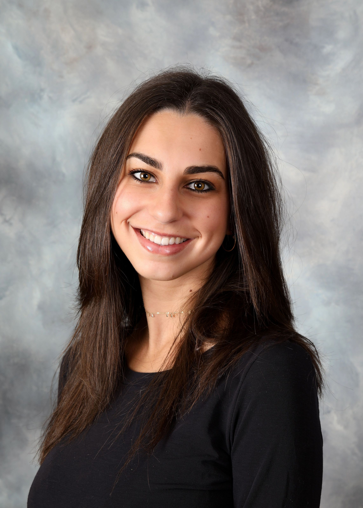

As a writer and copyeditor at Monumental Magazine, a student-run on-campus lifestyle and fashion magazine, I have several responsibilities. These responsibilities include pitching and assisting with story ideas, writing and reporting original stories, copyediting other writers’ stories, assisting with organizational tasks and conducting research.
As the Editorial Intern at Bethesda Magazine, I wrote a total of 10 stories that I completed reporting and research for myself. I reported to the Senior Editor Cindy Rich on the editorial side, as well as Andy Schotz, the managing editor for Bethesda Beat. I wrote long form and short form editorial pieces for the bi-monthly magazine, as well as several news stories for the Bethesda Beat website.
As the Outreach and Digital Communications Intern for NewseumED, the education sector at the Newseum in Washington D.C., I aided the marketing and outreach teams by completing a research and competitor analysis project. I also assisted with various digital tasks for the NewseumED website and team.
As a content creator and writer for the dose co., a small CBD company producing various food and drink products, I managed all social media spaces and created content for the dose co. website. I wrote weekly blogs on various topics, conducted background research, used audience engagement and analytics tools via the website and Instagram. I increased the page’s followers and was able to generate sales and more web traffic on the dose co. website.
As a features writer and general news reporter at the Mitzpeh, a student-run on-campus Jewish newspaper, I held several responsibilities. These responsibilities included pitching and assisting with story ideas, writing and reporting original stories for the news and features section, as well as conducting research.